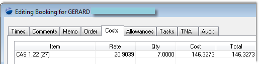
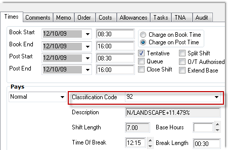
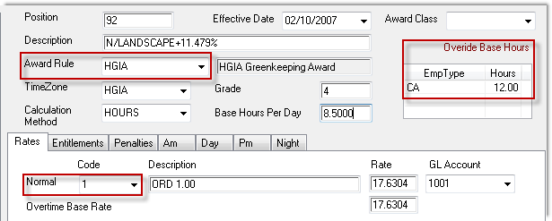
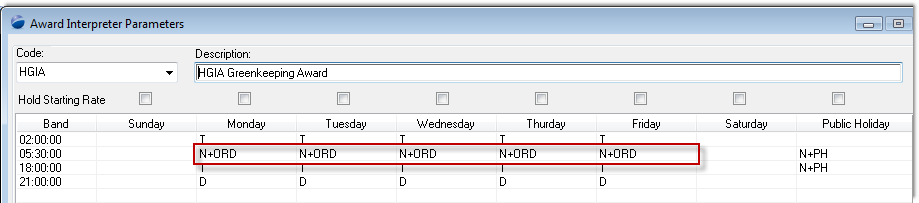
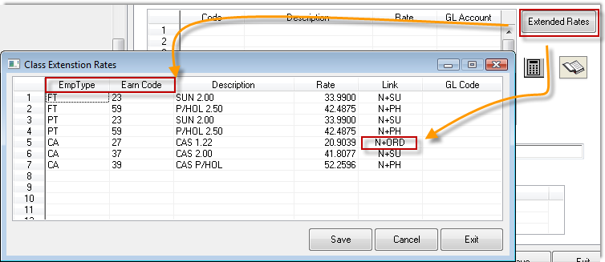
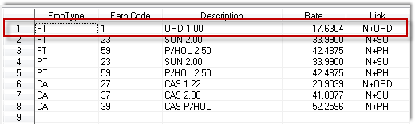
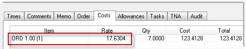

Home
Tutorial
Introduction
All the shifts being created for full time employees are being calculated at the incorrect rate (mon - fri, weekends are Ok).
The rate should be Ordinary hours, yet it's showing CAS as well as being the incorrect value.
|
Getting There:
[ SC ] –> Modules / Module Options
|
Issue
The details behind a shift edit are incorrect.

Top of Page
Step 1
To resolve this issue, we first look at what the system has done with the shift at create time. We want to see what classification (pay class) the system has cast the shift at, as per:

Step 2
Using the above information, go to the classification codes window, to verify the award details, gives:

Note that the award rule is HGIA, and that the Normal Hours code is "1".
An interesting aside seen here is indicating that this shift is generally 8.5 hours, unless your employment type is "CA", in which your normal base hours per day is 12.00. This configuration trick allows you do define the one payclass, and yet subtely change some details based upon the employment type.
Top of Page
Step 3

We are told that the shift is costing incorrectly Monday - Friday, and from the above we see a link code N+ORD. There is nothing else substantially important on this screen.
Top of Page
Step 4
In setting this system up, the client chose to use the visual indicator "+" to indicate that they are using the Extended Rates tab on the classification code, which is reflected here:

On the classification code window, press the "Extended Rates" button.
What you need to look for is the "N+ORD" link, and the only one found points correctly to the CAS 1.22, which is the value being calculated on the shift costs tab, confirming that PowerForce is doing as it's told.
Recall that the Normal Rate on the classification above, is code "1", which is not on this extend rates tab.
So, let's create it. Move your cursor to where you wish to define the entry, press "Insert" on your keyboard.
Top of Page
Step 5

Create a link code "N+ORD" (that's what's in the Award Interpreter, Emp Type of "FT" and an Earning Code of "1", to list out as "ORD 1.00" at a rate of 17.6304.
Top of Page
Step 6

Go back to our original edit costs tab on the shift, double click to force and re-cost, and here's the new correct value.
Top of Page
Summary
The above are indicative of the generic process that tech support use to confirm any customer related enquiries.
Top of Page
See Also
 PowerForce Controls PowerForce Controls
|